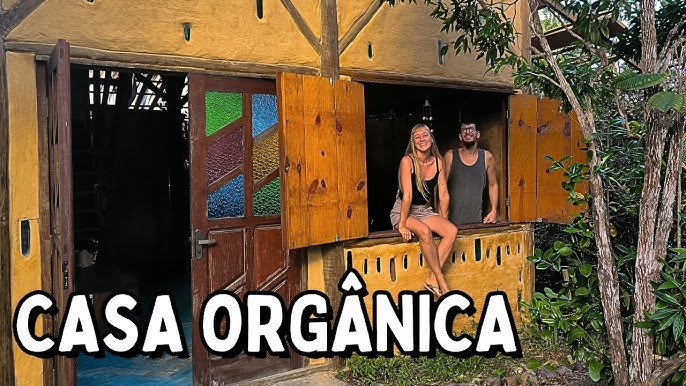

Construindo o Futuro com a Natureza
🌱
Entrar



#Bioconstrução #Sustentabilidade #Bioarquitetura
63.093 visualizações • 25 de ago. de 2024 • #Bioconstrução #Sustentabilidade #Bioarquitetura Passamos duas semanas morando em uma Bioconstrução lindíssima. E nesse vídeo você vai conhecer melhor como essa casinha funciona e também o que não funcionou na casa. Isso mesmo, estamos passando esse tempo na Casa Orgânica também para fazer algumas reformas e você vai acompanhar todas essas adaptações e também conhecer mais do local que ela esta inserida, que é uma ilha paradisíaca na Bahia, a Ilha de Boipeba.